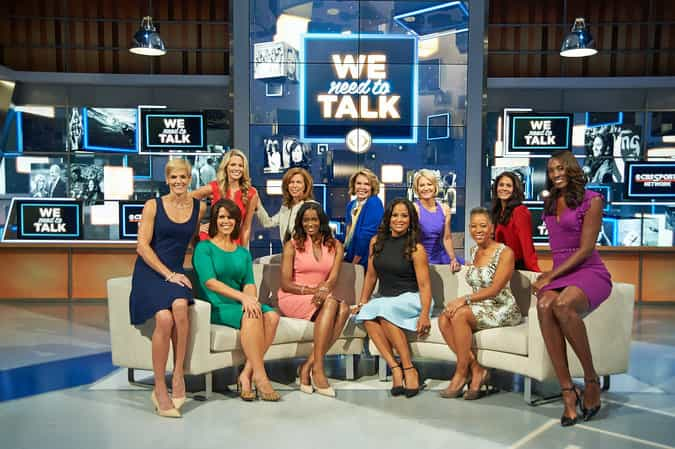

< < < Back
“We Need To Talk” Is The Latest Invasion Of Women Into A Male Space – Return Of Kings
Q: How odd would it be to turn on the TV and see a show about child birth with an all male panel?
A: About as odd as a program about sports where all the pundits are women.
Believe it or not, gentlemen, that age is upon us. No, not the child birth show (though Dr. Oz, and The Doctors come very close at times). I’m talking about a sports show with an all female cast called We Need To Talk.
We Need To Talk, is a sports commentary program that features a forum made up of all women who hamster discuss the issues of the day as they pertain to professional athletes. The red pill in me wouldn’t allow me to take this seriously, but I channeled my inner beta and decided to be a “grown up” and reserve my preconceived red pill judgment until I’d actually watched it. Plus, I’m something of a sports fan myself so I figured what the hell—let’s see what happens…
The show is a fucking joke.
Look, I gave it an honest try I really did. But once a man ingests the crimson capsule there is no going back. The way I see things after unplugging from the matrix is much different from seven years ago when I would probably have given the show two enthusiastic thumbs up. My intimate knowledge of a woman’s true nature enables me to see right through their narrative and recognize it for what it really is.
Let’s break down this paper tiger and figure out why this wannabe pageant masquerading as a sports desk is an abject failure.
The Forum

The first thing that jumped out at me was this so-called mod squad. From has-beens to man-jawed (literally) feminazis, this bunch has it all. They have one or two regulars with the rest of them rotating in and out depending on their “busy schedules” as “powerful women.”
Lesley Visser: One of the leading ladies on the set whose plastic surgery debacle has made her look almost as bad as Lark Voorhees.
Dana Jacobson: A fattie (who, to her credit, has a decent face) who’s been previously suspended by ESPN for publicly embarrassing her employer by getting drunk at a mixer and screaming “Fuck touchdown Jesus!!” at a Notre Dame alumn.
Laila Ali: The daughter of Muhammed Ali who, despite having above average aesthetics, exudes about as much femininity as I do. No doubt following in Daddy’s footsteps made her that way.
Dara Torres: Olympic swimmer whose jaw and masculine features betray her denials to the accusations she took performance enhancing drugs (for the record I’m not against steroids or HGH in sports).
Swin Cash: A former WNBA star whose angry disposition indicates she likely had a rough upbringing.
Summer Sanders: Another Olympic swimmer who used to be America’s sweetheart but seems to have aged 20 years overnight.
Amy Trask: A first generation feminist whose work with the Raiders over three decades shows us all what a feminist really looks like.
I can hear women now: “OMG SharpShooter! Are looks the only thing that matters with women on TV??”
Yes. And you know it.
Men don’t give a shit about a woman’s credentials—especially when it comes to sports. Like most other things, we don’t care about much else a woman has to offer other than how easy she is on the eyes. Granted, if we do have to stomach female commentary we don’t want her to act or sound like a clueless idiot on camera. But ugly chicks don’t get much air time no matter how many media credentials or communications degrees they have on their walls.
To be fair there is some credibility on this panel. Tracy Wolfson and Pam Oliver make occasional appearances and they’ve both worked the sidelines (so has Visser) for years and seem to know their shit. Amy Trask did work for the Oakland Raiders for 30 years so she obviously has some knowledge on how sports work on and off the field. And finally Ali LaForce and Lisa Lesley provide us with a little femininity and eye candy to make the show watchable from boner test standpoint, so the cast isn’t a complete dumpster fire.
But on the whole the panel is exactly what I imagined it to be. A mixed bag of a few chicks who know a little bit about what they’re talking about, a few former athletes who can give anecdotal counts of their experiences, and a few who are nice to look at. Despite their differences, it’s clear they all joined the show to shove the feminine imperative down our collective throats under the guise of discussing a male-dominated sector from a female’s point of view.
What’s the point of the show?
The point of this show is to infiltrate the male mind by using sports to do it. They know damn well women aren’t watching this. Women couldn’t care less about sports no matter how much they pretend to. This program is for the fellas. Similar to Agent Lavender, this is designed to covertly permeate the masculine culture of professional sports and their consumers (which is weakening by the day).
Let’s take a look at why this will be a money pit for CBS in the coming months.
Feelings and ignorance don’t mix
When Summer Sanders gave her opinion on the University Of Alabama at Birmingham shutting down the football program her exact words were “If you look at this, like, emotionally, you have to feel for the players and the staff.” So right out of the gate she’s talking about emotions and feelings with regards to college football.
Obviously it sucked for the players and coaches to have the carpet pulled from under them, but here’s what women simply do not understand: this is how life works. Men understand that shit happens. We know that life throws us curveballs but we don’t bitch and moan about it. We accept it, pick ourselves up, and move on with life. The players can transfer and play elsewhere without a one year eligibility penalty and the coaches will land on their feet by finding other coaching gigs. It’s as simple as that.
What made her “analysis” worse is that Ms. Sanders ventured into what became crystal clear, uncharted territory for her:
“They need to look at their budgets and maybe they need to look at the way they do business.”
That cookie cutter statement showed she had zero clue how an athletic program works or that she didn’t do any research into the UAB situation. She just blurted out something she heard on the news in an attempt to sound well-learned on the matter. Luckily, Trask bailed her out and rescued the segment by talking about cost-benefit analysis and why funding a college football program isn’t as easy to run as it looks on television.
Girls will be girls
Dana Jacobson’s interview with 2014 Heisman Trophy winner Marcus Mariota was unwatchable. She peppered him with questions about his feelings, what he wanted to do while in New York City (the site of the trophy presentation), and the character of Heisman trophy winners was bland and predictable.
I laughed out loud when she asked him what his favorite beach was and why because in my mind, this was supposed to be a show about sports from a female point of view. I guess I’m in the wrong here for expecting substantive sports talk from women but I honestly didn’t expect this level of chick talk.
There was, however, a bit of red pill wisdom nestled in when Mariota talked about one of his favorite surf spots, Sandy Beach. The moment he mentioned how dangerous it was, Jacobson’s tingles were front and center as she giggled with glee no doubt fantasizing about what a bad boy the Oregon QB must be.
At the end of the day girls will always be girls.
The truth always comes out
A woman’s true nature will always rear its ugly head regardless of the environment. Swin Cash proved as much with this little gem:
“My mother made the brave decision not to get married so that the government could pay for my college education.”
Women these days have no shame voicing their welfare mentality, but to see it on national T.V. was a shock. It was quite funny to see the reaction of her colleagues when she dropped this nuke which was obviously unexpected. I will give her credit for having the balls to exhibit that level of candor though.
And of course they squawked about domestic violence
There’s little doubt in my mind that the recent media firestorm surrounding the NFL’s ongoing bout with domestic violence cases is the main reason this program exists. It’s namesake makes it obvious. Most of the videos I wanted to put in this article are no longer available but the domestic violence episode remains for public consumption (surprise, surprise).
Everyone of the panelists seem to have been through it in some way shape or form and they all couldn’t wait to share their “brave stories of survival.” They took it a step further stating “and don’t you dare play down mental abuse” which is another prod for them to poke men with. Of course they talked about the bullshit “one in four” rape stat and hamstered about women not coming forward after rape or abuse.
Toward the end of their discussion they predictably tipped their hand. They challenged NFL Commissioner Roger Goodell to be the voice of social change. They want him to be more proactive on matters of domestic violence which really means kicking men out of the league before convicted. They even came right out and said they’d like to use the NFL as a vehicle of social change because of its power and influence. At least they’re honest.
So What Did I Learn?
Nothing. The only difference between We Need To Talk and other female shows is that the subject matter revolves around professional athletes. Other than that they’re all the same. The feminist views, the hamstering, the cattiness amongst the hosts, all the boxes are checked.
I have no idea how this show survives. Men aren’t going to watch a sports talk program rife with feminine undertones and women don’t tolerate sports unless there’s male attention to hoard. The show will be on air longer than it should in the name of political correctness and social justice warriors. I guess the only positive I can take from that is that this will be another example of women failing in a male dominated arena.
Read Next: What Women’s Tennis Says About “Equal” Pay